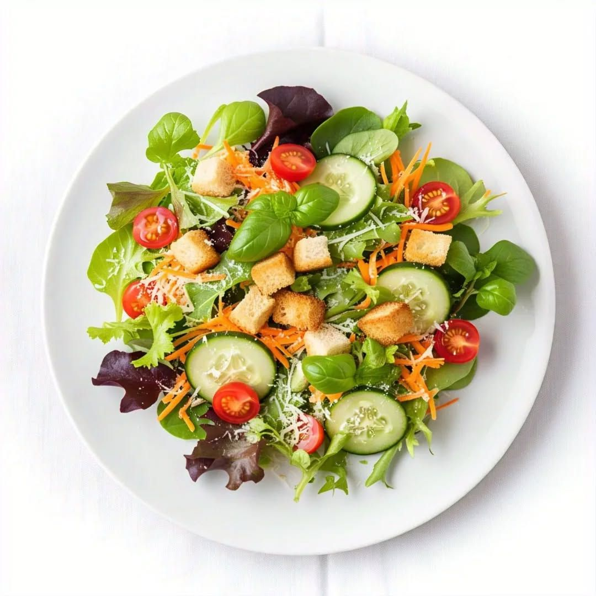
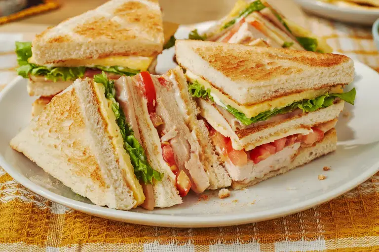
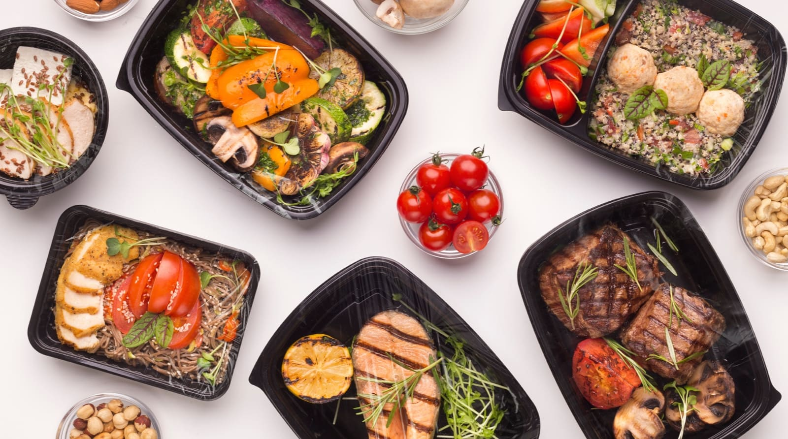
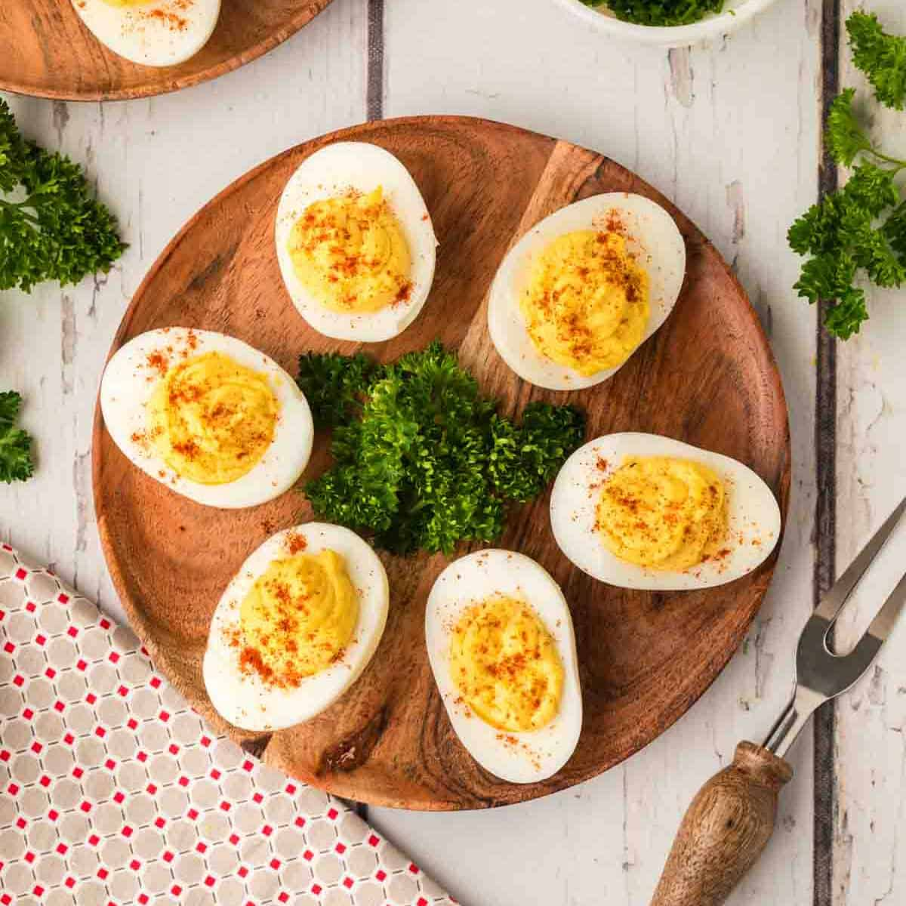
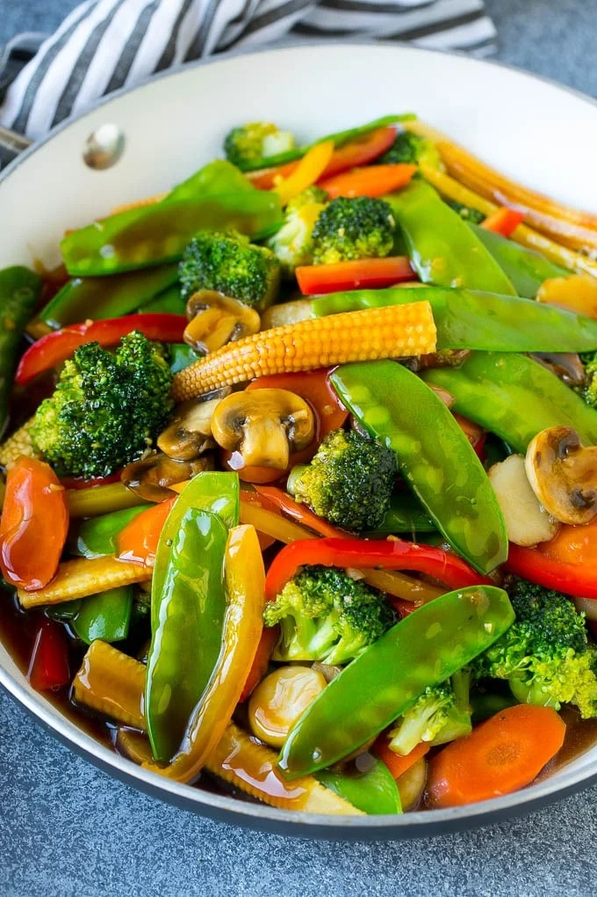
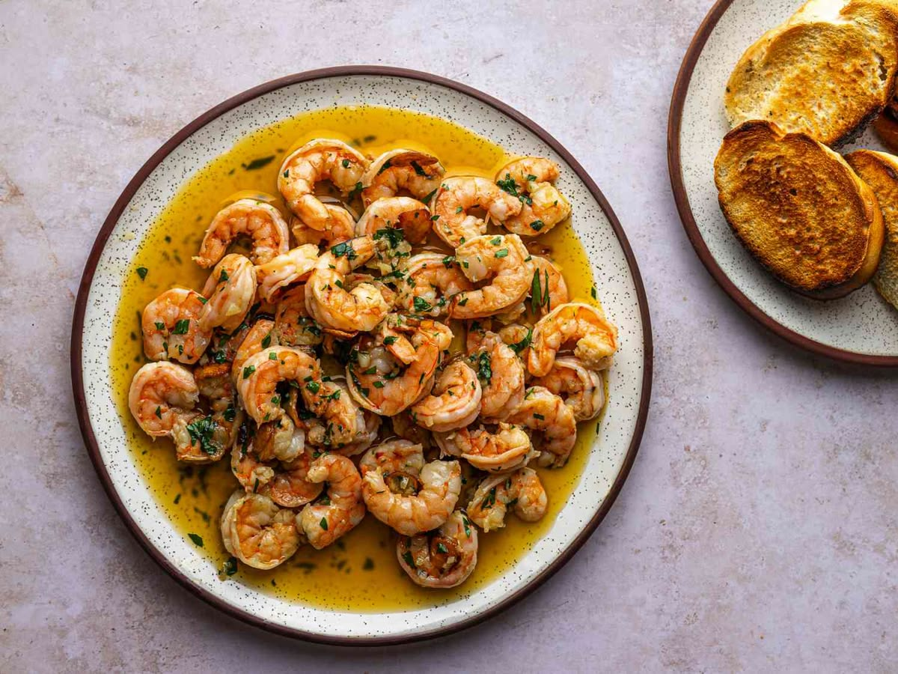

LEARNING MATERIALS
Access and download your comprehensive instructional materials and study modules step by step.
Module 1
Kitchen Tools and Equipment
An essential guide introducing the foundational layout of a commercial kitchen, detailing proper safety protocols, identification, handling, and maintenance of primary tools and modern culinary equipment.
Module 2
Prepare Appetizers
Master the art of creating light, appetizing first-course delicacies. This unit covers classical and contemporary styles, portion balance, aesthetics, and temperature control principles.
Module 3
Salad and Dressing
Explore crisp components, composition guidelines, and emulsification techniques. Learn to formulate complementary vinaigrettes and emulsified dressings to enhance raw and cooked ingredients.

Module 4
Sandwiches
Unpack structural dynamics, moistening spreads, and structural filling elements. Covers a wide variety of preparation methods for hot, cold, layered, and regional specialty sandwiches.

Module 5
Prepare Desserts
Discover foundational pastry and dessert concepts, sweet sauce formulations, custard baking, and precision plating designs for the perfect multi-course conclusion.
Module 6
Package Prepared Food Stuff
Focuses heavily on professional storage standards, critical food safety criteria, sanitary packaging technologies, shelf-life preservation, and systematic container labeling protocols.

Module 7
Prepare Egg Dishes
Understand the versatile functional properties of eggs in culinary applications. Learn critical procedures for scrambling, poaching, frying, making omelets, and handling soufflés cleanly.

Module 8
Prepare Cereals and Starch Dishes
A deep-dive review of grains, al dente pasta criteria, complex starches, potato cookery, and optimal hydration and simmering techniques for carbohydrate-based menus.

Module 9
Prepare Vegetable Dishes
Preserve maximum nutritional integrity, natural pigmentation, and crisp textures. Includes boiling, blanching, steaming, roasting, and glazing across all vegetable categories.

Module 10
Prepare and Cook Seafood Dishes
Covers safe storage criteria, round/flat fish scaling, filleting, and gentle heat control methods like poaching, searing, and broiling for premium finfish and shellfish items.

Module 11
Prepare Stocks, Sauces and Soups
The backbone of culinary fluid arts. Study white/brown stocks, proper clarification systems, soup categories, and the classic Mother Sauces with their derivative modifications.
Module 12
Prepare Poultry and Game Dishes
Examine structural fabrication, dynamic trussing, internal safety temperatures, and complex dry/moist cooking applications for diverse avian species.
Module 13
Prepare and Cook Meat
Comprehensive evaluation of beef, pork, and lamb cuts. Features tenderizing sciences, grain alignment carving rules, braising profiles, and precise meat-doneness grading scales.

ASSESSMENT GUIDES
Verify competency and performance metrics through our benchmark evaluations, practical exam rubrics, and diagnostic criteria.
Practical Test
Access Practical Review Test here and test your knowledge about what you read about this class.
Access Test